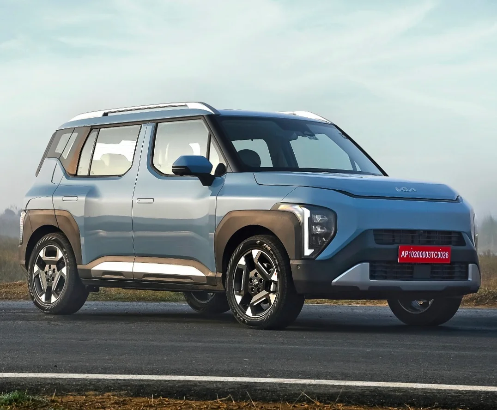
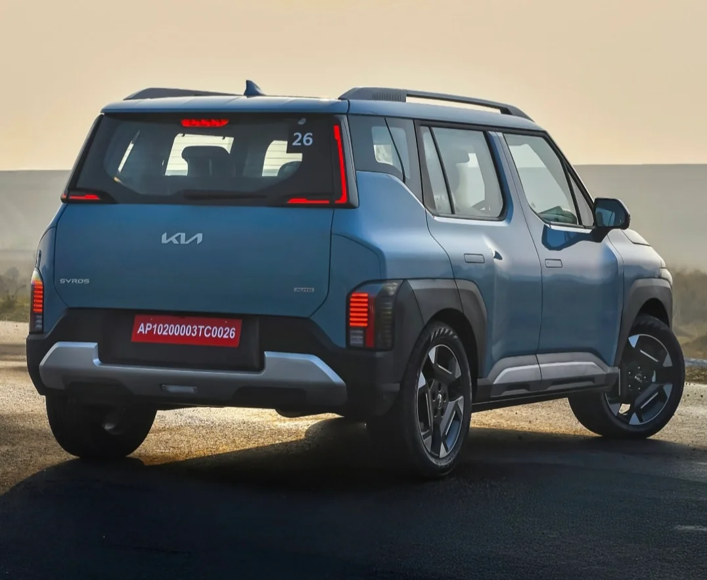

▲ 인도에서 판매 중인 기아 시로스. EV 모델도 이 차체와 디자인을 그대로 이어받았다 ⓒ Kia Syros AY, Wikimedia Commons (CC BY 4.0)
기아가 인도 전용 소형 SUV '시로스'의 순수전기 버전인 '시로스 EV'를 지난 7월 24일 인도 현지에서 공식 출시했습니다. 소비자 인도는 7월 30일부터 시작되는데, 이는 2025년 2월 가솔린·디젤 모델로 먼저 나와 출시 5개월 만에 누적 판매 2만 4천 대를 넘기며 인도 초소형 SUV 시장에서 돌풍을 일으킨 시로스의 전동화 버전이라는 점에서 특히 주목받고 있습니다. 기아는 2026년을 EV2와 시로스 EV를 시작으로 한 '볼륨 EV' 확대의 원년으로 잡고 있으며, 인도는 신흥시장 전용 EV(시로스 EV, 카렌스 EV)의 생산 거점 역할을 맡습니다.
1. 가격 & 트림 — 5개 라인업, 2천만원대부터

▲ 측면부는 각진 휠아치와 투톤 루프로 박스카 특유의 듬직한 인상을 강조했다 ⓒ Kia Syros AY, Wikimedia Commons (CC BY 4.0)
시로스 EV는 HTK, HTK 플러스, HTX, HTX 플러스, X-Line까지 5개 트림으로 운영되며, 배터리 용량에 따라 선택 가능한 트림이 갈립니다. 기본 트림인 HTK는 42kWh 배터리 단일 사양으로 13.50만 루피(약 2,105만 원)부터 시작하고, HTK 플러스와 HTX는 42kWh·51.4kWh 두 배터리를 모두 고를 수 있습니다. 51.4kWh 배터리를 기본으로 하는 HTX 플러스와 최상위 X-Line은 각각 19.50만 루피(약 3,040만 원), 20만 루피(약 3,118만 원)로 책정됐습니다. 원화 환산액은 참고용 추정치이며, 인도 현지 세금·등록비가 포함되지 않은 출고가 기준입니다.
| 트림 | 42kWh | 51.4kWh |
|---|---|---|
| HTK | 13.50만 루피 | - |
| HTK 플러스 | 15만 루피 | 17만 루피 |
| HTX | 16만 루피 | 18만 루피 |
| HTX 플러스 | - | 19.50만 루피 |
| X-Line | - | 20만 루피 |
기본 트림부터 12.3인치 인포테인먼트와 12.3인치 디지털 계기판, 무선 안드로이드 오토·애플 카플레이, 파노라믹 선루프, 64색 실내 무드 조명, 스마트키 기반 키리스 진입까지 갖춰 가격 대비 편의 사양이 넉넉하다는 평가입니다. 안전 사양도 전 트림 6에어백, ABS·EBD, 차체자세제어(ESC), 경사로밀림방지(HHC), 전자식 파킹 브레이크, 타이어 공기압 모니터링(TPMS), 아이소픽스 등을 기본 적용했고, 최상위 X-Line 트림에는 레벨2 수준의 첨단 운전자보조(ADAS) 기능까지 들어갑니다.
2. 배터리 & 주행거리 — 동급 최초 500km 돌파
시로스 EV의 가장 큰 무기는 주행거리입니다. NMC 배터리와 액체 냉각식 열 관리 시스템을 갖춘 42kWh 배터리는 인도자동차연구협회(ARAI) 인증 기준 443km를, 51.4kWh 배터리는 526km를 기록해 인도 엔트리급 전기 SUV 세그먼트에서 처음으로 500km 벽을 넘어섰습니다. 출력도 배터리 용량에 따라 갈리는데, 42kWh 사양은 전륜구동 모터로 135마력·255Nm을, 51.4kWh 사양은 같은 토크를 유지하면서 출력만 171마력으로 끌어올려 정지 상태에서 시속 100km까지 8.1초 만에 도달합니다.
| 항목 | 42kWh | 51.4kWh |
|---|---|---|
| 최고출력 | 135마력 | 171마력 |
| 최대토크 | 255Nm | 255Nm |
| ARAI 인증 주행거리 | 443km | 526km |
| 정지→시속 100km | - | 8.1초 |
| 구동방식 | 전륜구동(FWD) | |
현재 인도 엔트리급 전기 SUV 시장에서 시로스 EV와 직접 경쟁하는 모델은 타타 넥슨 EV(약 124.9만~174.9만 루피)와 마힌드라 XUV 3XO EV(약 138.9만~149.6만 루피)입니다. 두 모델 모두 주행거리가 400km대 초중반에 머무는 것과 비교하면, 시로스 EV의 526km는 경쟁 모델 대비 뚜렷한 우위로 꼽힙니다.
3. 급속충전 & K-Charge 인프라 — 10→80% 39분
시로스 EV는 최고 100kW DC 급속충전을 지원하며, 배터리 컨디셔닝 기능으로 충전 전 배터리 온도를 미리 최적화해 10%에서 80%까지 약 39분 만에 충전을 마칠 수 있습니다. 여기에 기아의 충전 생태계 'K-Charge'를 기반으로 마이기아 앱을 통해 인도 전역 23개 주요 충전 사업자(CPO)가 운영하는 2만 300여 개 충전소에 접근할 수 있어, 도심을 벗어난 지역에서도 충전 인프라 접근성이 상대적으로 양호한 편입니다.
이 같은 충전 성능은 인도 시장 특유의 장거리 이동 수요를 염두에 둔 설계로 풀이됩니다. 대도시 간 거리가 멀고 고속 충전 인프라가 아직 촘촘하지 않은 인도 시장에서, 40분 내외의 급속충전과 500km급 주행거리를 함께 갖췄다는 점은 실사용성 측면에서 경쟁 모델 대비 강점으로 작용할 가능성이 큽니다.
4. '박스카' 시로스, 흥행을 그대로 EV로 이어갈까

▲ 후면 SYROS 레터링과 좌우로 각진 테일램프. EV 모델도 동일한 후면 디자인을 공유한다 ⓒ Kia Syros AY, Wikimedia Commons (CC BY 4.0)
시로스는 2024년 12월 인도에서 세계 최초로 공개돼 2025년 2월 가솔린·디젤 모델로 먼저 출시됐습니다. 쏘울이나 캐스퍼를 연상시키는 박스형 차체에 EV9의 최신 디자인 언어인 '오퍼짓 유나이티드'를 접목해 소형 SUV치고는 이례적으로 미래지향적이고 고급스러운 인상을 갖췄다는 평가를 받았고, 실제로 출시 5개월 만에 누적 판매 2만 4천 대를 돌파하며 인도 초소형 SUV 세그먼트에서 폭발적인 반응을 얻었습니다. 파워트레인도 1.0 가솔린 터보(120마력·172Nm)와 1.5 디젤 두 가지로 운영돼 다양한 소비층을 겨냥했습니다.
이번 EV 버전은 이렇게 검증된 차체와 디자인을 그대로 물려받으면서, 배터리·모터·충전 시스템만 새로 얹은 형태입니다. 완전히 새로운 모델을 내놓는 대신 이미 시장에서 인기를 확인한 차체에 전동화 파워트레인을 이식하는 방식은, 개발 리스크를 줄이면서도 기존 시로스 구매층을 전기차로 자연스럽게 유도할 수 있다는 점에서 기아의 신흥시장 전동화 전략을 잘 보여주는 사례로 꼽힙니다.
5. 국내 출시 가능성은?
시로스 EV는 어디까지나 인도를 비롯한 신흥시장을 겨냥해 설계·생산되는 모델입니다. 기아는 한국을 EV 개발·생산의 글로벌 허브로 두고 전 차급의 EV를 만들어 세계 시장에 공급하는 한편, 인도에서는 시로스 EV·카렌스 EV 같은 신흥시장 전략형 EV를 별도로 생산하는 투트랙 전략을 취하고 있습니다. 기아는 2026년 CEO 인베스터 데이에서 2030년까지 총 10종의 신차를 투입하고 이 중 8개 모델을 전동화 차량으로 구성하는 친환경차 풀라인업 계획을 밝히기도 했습니다.
종합하면 시로스 EV는 화려한 스펙 경쟁보다는 검증된 차체에 실사용성 높은 배터리·충전 성능을 얹어 신흥시장 전기차 대중화를 겨냥한 모델입니다. 국내 소비자 입장에서는 당장 구매할 수 없는 차량이지만, 기아가 인도·동남아 같은 신흥시장에서 전동화 전략을 어떻게 구체화하고 있는지를 보여주는 사례로서 눈여겨볼 만합니다.